From my CR phase a century ago. I used to post comic and game translations on Tumblr, but it got deleted T_T. Fortunately a lot of the Kakao stuff is saved but other stuff is lost... There's still have a bunch saved on my hard drive here, so enjoy.
I got into CR around 2013. Back then the Kakao (Korean) and Line (global) releases were about a year apart, and the Line's English translation, was, well... not the greatest. (My working theory is they got the Japanese translator to do the English translation too.) There was a huge release around that time in Kakao though, releasing... multiple stages! "L" class Cookies! Possibly lore?! Such things were new, and I wanted to learn them, so I began learning Korean and posting my translations of the Kakao game.
Then I found out about the manhwa and started importing and translating them. This did get the attention of the dev team, they followed me on Tumblr and Twitter for years lol. But eventually the fandom, which was always one of the most *intense* and strange even when it was tiny, got too much for me. The final straw was getting scammed out of money over ship drama, long story! Plus I just didn't enjoy the post-Kakao games nearly as much. While I've been out of the fandom for years and years now, this series has a special place in my heart. Somehow.


 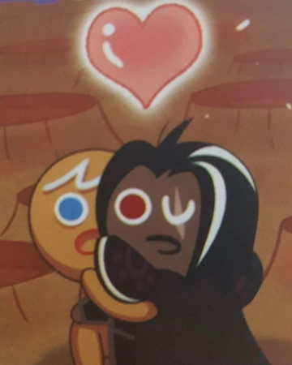
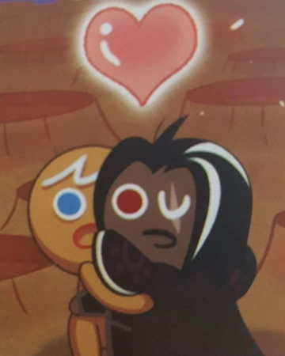


 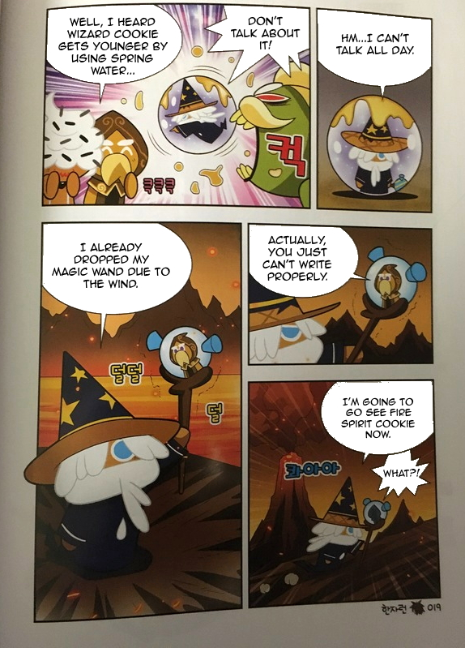
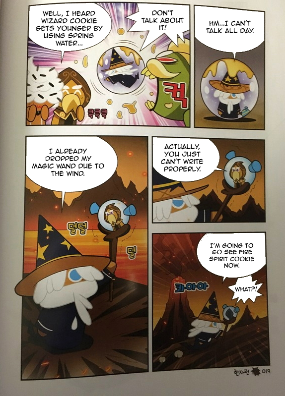
 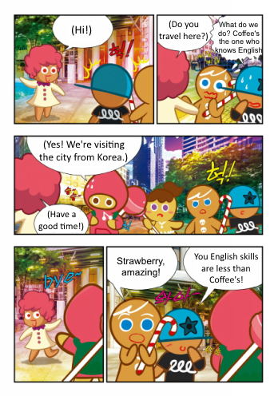
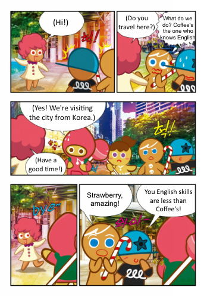

 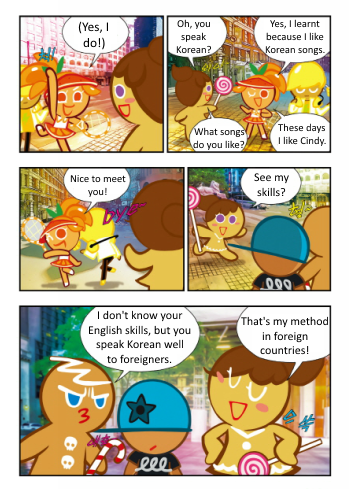
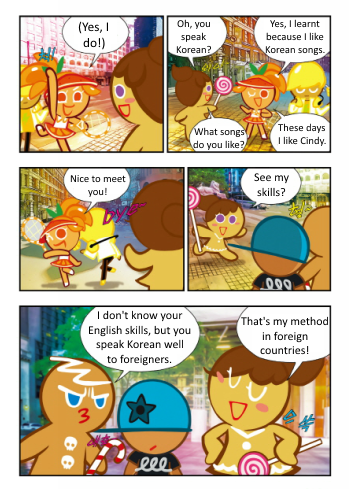
Fun fact: this outfit appeared in the comics before it was available in the games!
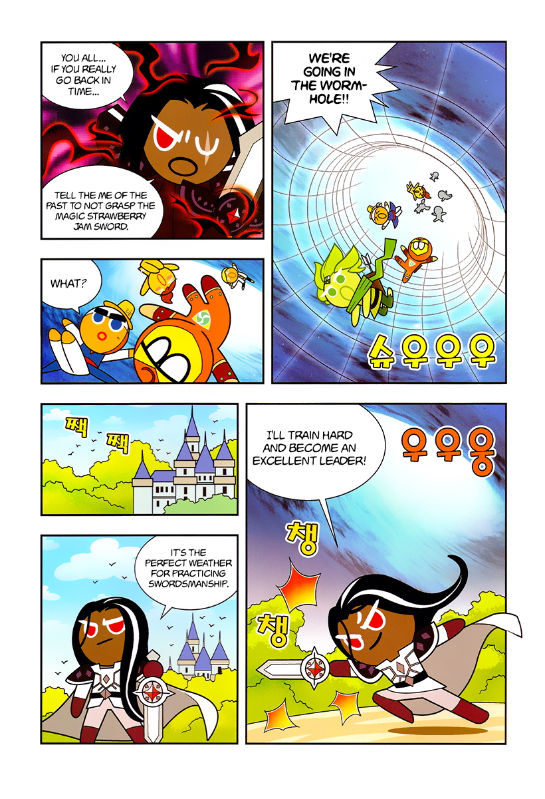

 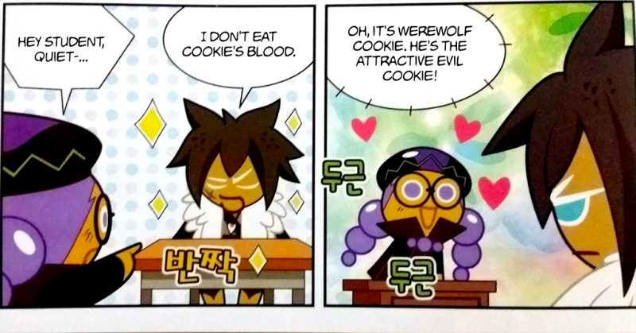
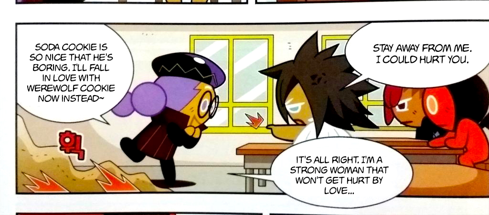
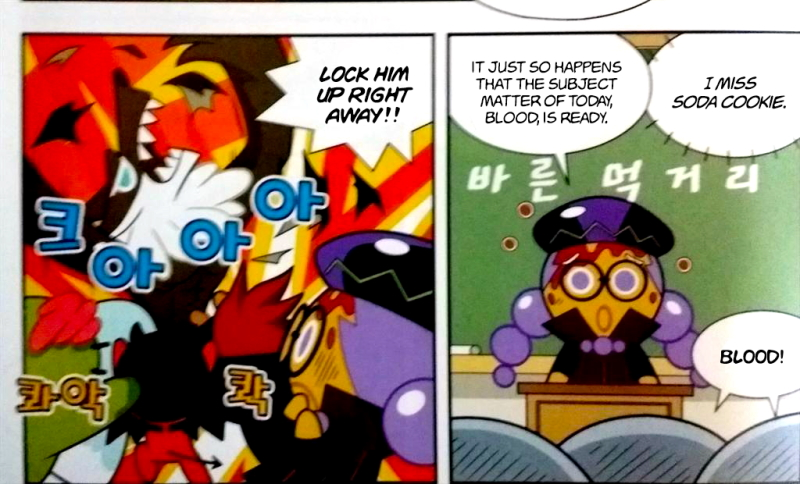
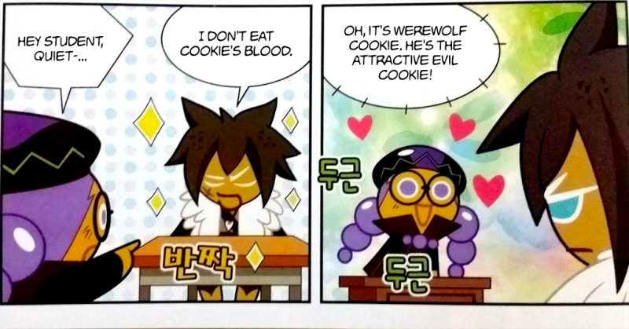
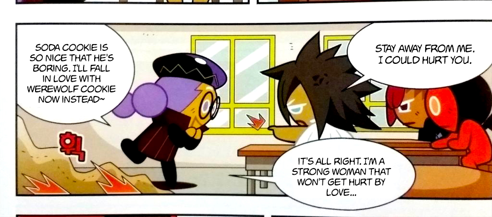
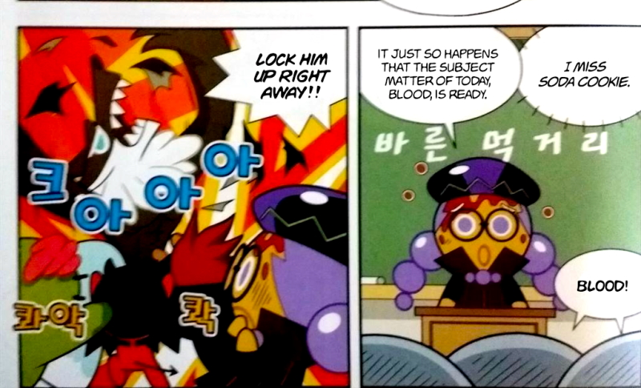


 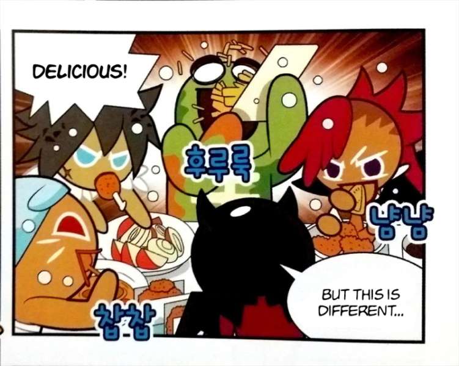
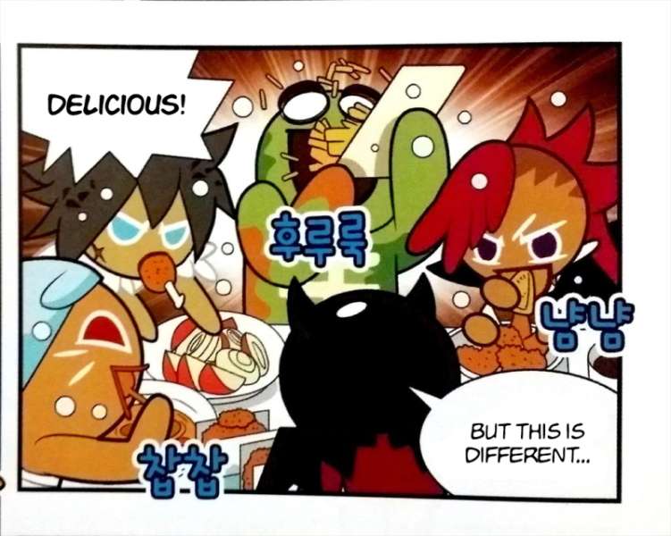
 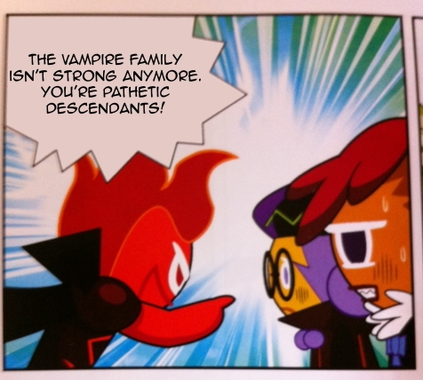
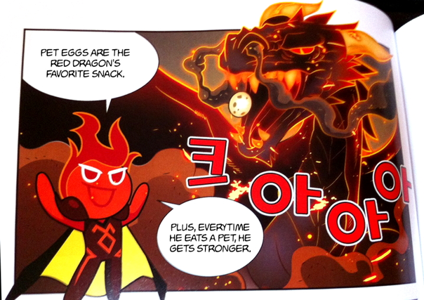
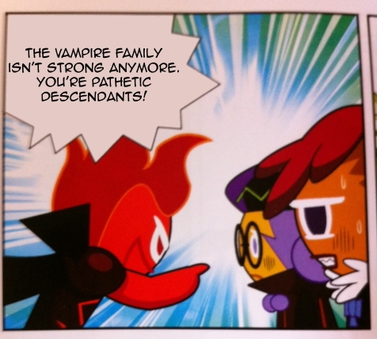
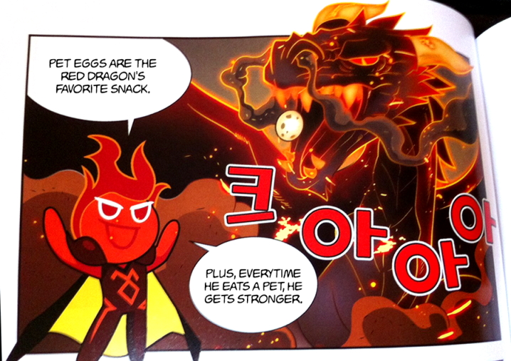

 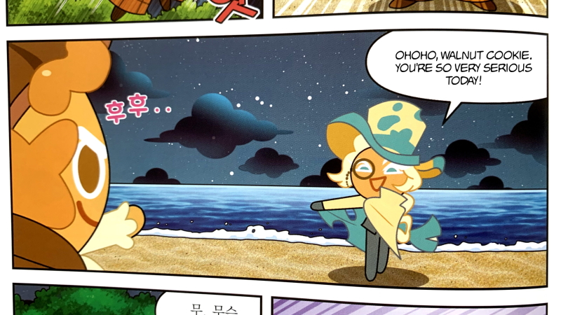
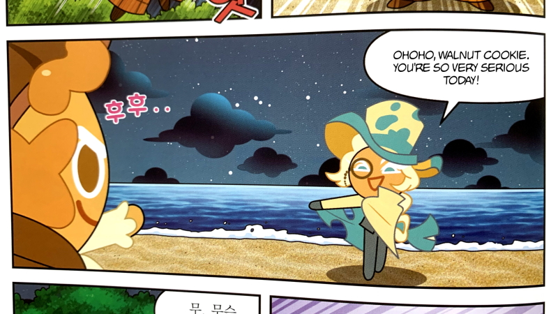

 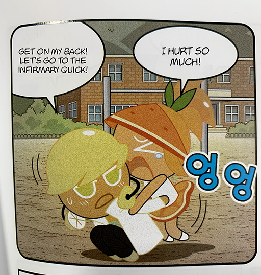
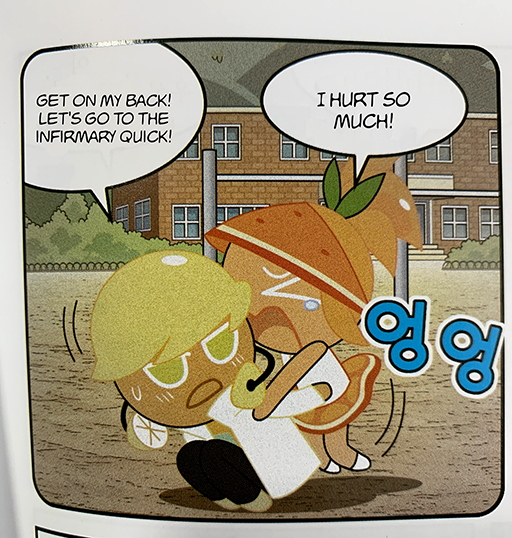